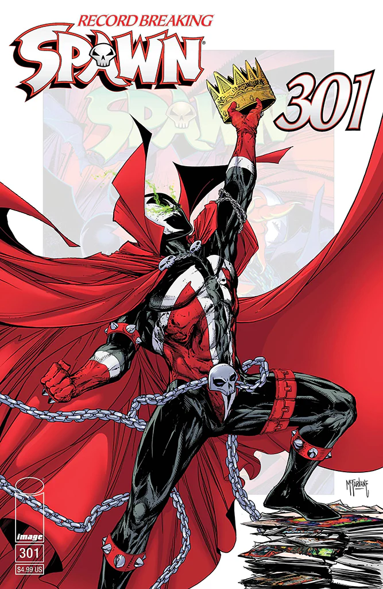
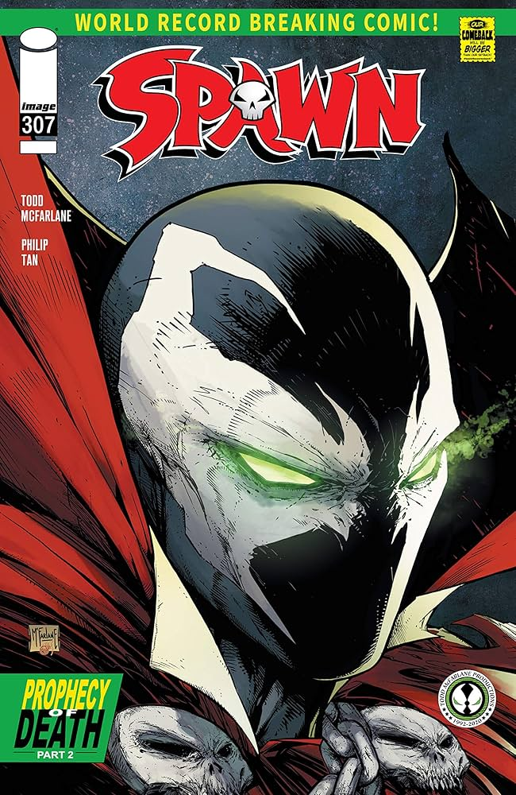

Spawn

Spawn egy sötét, démoni antihős, akinek valódi neve Al Simmons, egy egykori elit katona és bérgyilkos. Halála után alkut köt a pokol urával, hogy még egyszer láthassa a feleségét, ám ezért cserébe a pokol szolgájává válik. Újjászületve azonban már nem ember: teste torz, lelke megtört, és hatalmas, természetfeletti erőkkel rendelkezik.
Spawn története a megváltásról és az identitáskeresésről szól. Bár pokoli erőket használ, gyakran a jó oldalán harcol, miközben folyamatosan küzd saját démonjaival — szó szerint és átvitt értelemben is. A karakter világát erős gótikus hangulat, brutalitás és morális szürkeség jellemzi.

Spawn 1992-ben jelent meg különállóan a DC és a Marvel kiadóitól. Helyette az Image Comicsnál jelent meg és futott be mint 6 legkellendőbb képregény a világon. A figura megalkotója Todd McFarlane, aki a ’90-es években forradalmasította a képregényipart ezzel a sötétebb tónusú, felnőttesebb hőssel. Spawn azóta nemcsak képregényekben, hanem filmekben, animációkban és videojátékokban is megjelent, és az egyik legismertebb Image Comics karakterré vált.